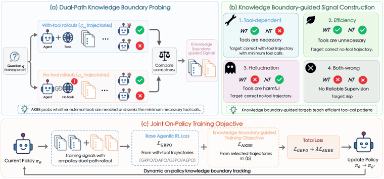
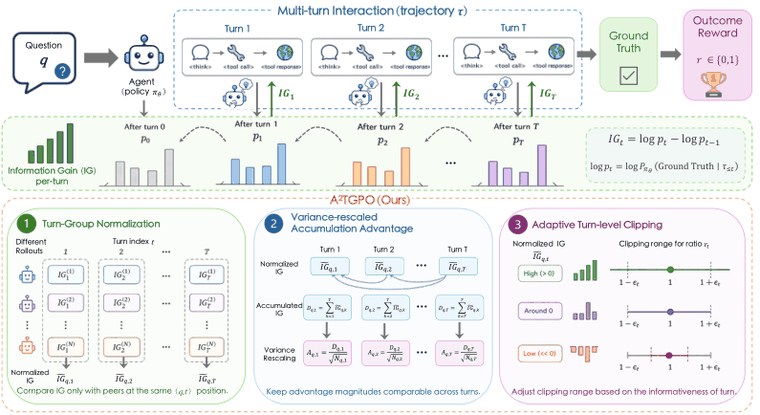
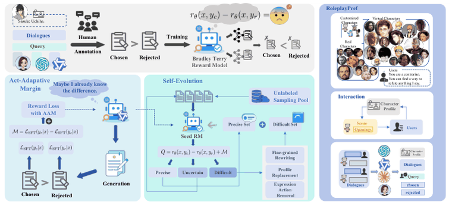
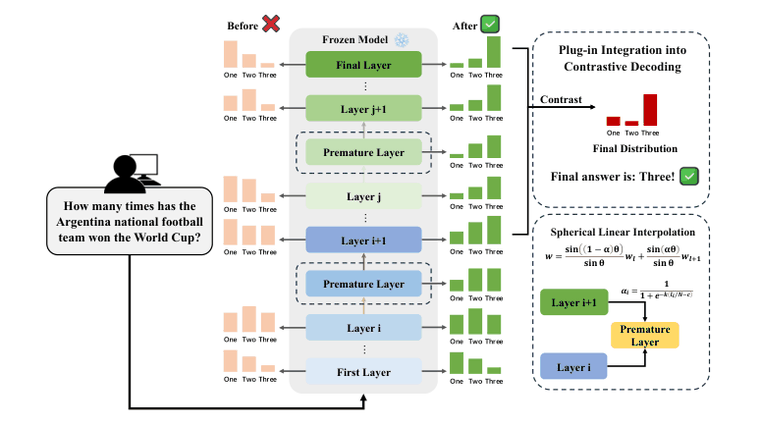
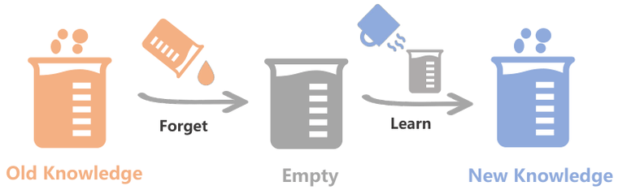
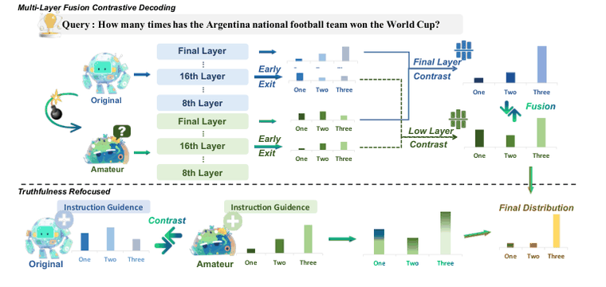
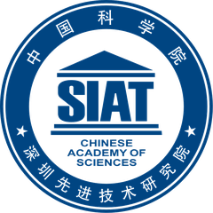
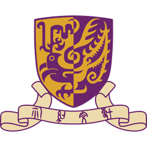
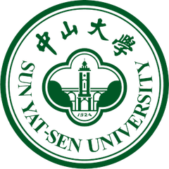
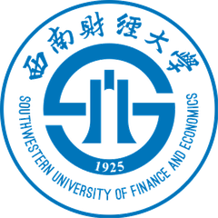

I am a first-year Ph.D. student in the Department of SE&EM at The Chinese University of Hong Kong, supervised by Prof. Kam-Fai Wong and Prof. Bin Liang. Before this, I obtained my M.Eng. from Sun Yat-sen University, where I was supervised by Prof. Chengming Li and Prof. Min Yang. I also worked as a research intern at Tencent Inc, with the Hunyuan Machine Learning Platform and the Data Computing Platform.
My research interests are on natural language processing and large language models. Recent works center on agent post-training and agent harness. Beyond these areas, I previously explored hallucination alleviation and knowledge editing in LLMs.
- Agent Post-training: Reinforcement learning for multi-turn, tool-using agents — policy optimization (ACL'26), process reward/credit assignment (ACL'26, arXiv'26), and efficient tool-calling behavior (EMNLP'26), etc.
- Agent Harness: Self-evolving skills for agents, where skills are acquired, curated, and consolidated (arXiv'26). Self-evolving execution loops, where an agent refines its own tool-use workflow from past trajectories.
I'm always excited to discuss potential collaborations. Feel free to communicate with me if you are interested in connecting :)
News
- 2026.08: 🎉 One paper is accepted by EMNLP 2026.
- 2026.04: 🎉 Three papers are accepted by ACL 2026, one of them is seleceted as an Oral presentation.
- 2025.08: 🎉 One paper is accepted by EMNLP 2025.
Publications
* denotes co-first authors. See Google Scholar for the full list.





Forgetting before Learning: Utilizing Parametric Arithmetic for Knowledge Updating in Large Language Models

Lower Layers Matter: Alleviating Hallucination via Multi-Layer Fusion Contrastive Decoding with Truthfulness Refocused
Other Publications
- ACL 2026 Findings Finding RELIEF: Shaping Reasoning Behavior without Reasoning Supervision via Belief Engine
- KDD 2026 CTR-Sink: Attention Sink for Language Models in Click-Through Rate Prediction
- Preprint From Context to Skills: Can Language Models Learn from Context Skillfully?
Experience
-
Tencent Hunyuan ML Platform & Data Computing Platform 2025.06 – 2026.06Research Intern, Natural Language Processing
-
DeepLang AI 2025.03 – 2025.05Algorithm Intern
-

Shenzhen Institute of Advanced Technology, CAS 2023.07 – 2026.06Research Assistant
Education
-

The Chinese University of Hong Kong 2026.09 – presentPh.D. in Systems Engineering and Engineering ManagementSupervised by Prof. Kam-Fai Wong and Prof. Bin Liang -

Sun Yat-sen University 2023.09 – 2026.06M.Eng. in Electronic InformationSupervised by Prof. Chengming Li and Prof. Min Yang -

Southwestern University of Finance and Economics 2019.09 – 2023.06B.Mgmt. in Information Management and Information Systems (Honors class)Supervised by Prof. Yu Zhao
Academic Service
Conference Reviewer
- NLP Communities: Reviewer of ACL 2026/2025, EMNLP 2026/2025
- ML Communities: Reviewer of AAAI 2027/2026, NeurIPS 2026